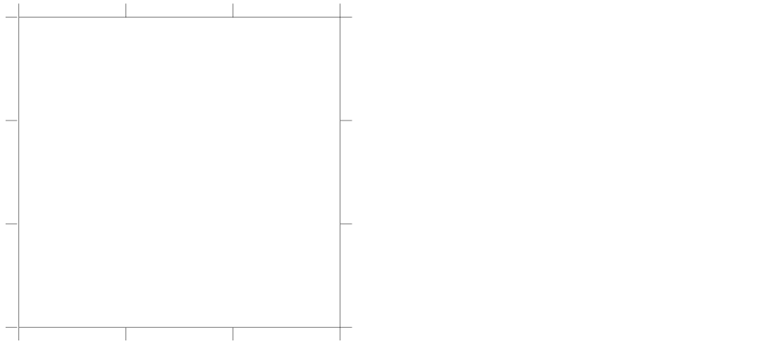

4
Creating a Multisheet Schematic
You can use multisheet schematics to partition your design among several sheets, thus creating a hierarchy.
This chapter provides information about the following topics:
- Browsing a List of Multisheets
- Converting a Single-Sheet Schematic to a Multisheet Schematic
- Adding New Sheets
- Editing the Title Block
- Editing the Sheet Border Size and Type
- Understanding Offsheet Pins and Their Naming Conventions
- Adding Offsheet Pins to Multisheet Schematics
- Understanding the Index Schematic
- Going to and from the Index Schematic
- Repositioning a Schematic within the Sheet Borders
- Deleting Sheets
- Reordering Sheets
- Renumbering Sheets
- Working with Cross-References
- Customizing Multisheets
- Customizing Pin Cross-References
- Presetting the Title Block Values
Browsing a List of Multisheets
The system uses a base name to group sheets of a multisheet schematic in a library. By default, the base name is the cell name of the original single-sheet schematic. Each sheet of a multisheet schematic has a unique sheet number.
Converting a Single-Sheet Schematic to a Multisheet Schematic
When you extend your design over several sheets, you improve readability, maintain drafting standards, and produce better plot output.
To convert a single-sheet schematic to a multisheet schematic,
- Open a single-sheet schematic.
-
Choose Create – Multisheet.
The Create Schematic Sheet form appears.
- Change the options to specify a multisheet schematic of the size and type you want.
-
Click OK.
A sheet border and title block appear in your design window as a new tab. You might need to change the size of the border, reposition your schematic within the border, or edit the sheet title.
Adding New Sheets
To add a new sheet to a multisheet schematic,
-
From the schematic window, choose Create – MultiSheet.
The Create Schematic Sheet form appears. -
In the Number field, type the number of the sheet you want to add.
If you want to determine the total number of pages, look at the title block in the lower right-hand corner of your schematic.
The size and type automatically default to the current values of the present set of sheets. -
Click OK.
If a sheet with the number you chose already exists, you are prompted to confirm the creation of the new sheet. The schematic editor creates the new sheet with the number you chose and renumbers the remaining sheets. The schematic editor also updates all properties in the index schematic.
Editing the Title Block
Title blocks help you keep track of the titles and revisions.
To add or modify the title block of a multisheet schematic,
-
From the schematic window, choose Edit – Sheet Title.
The Schematic Title Block Properties form appears.
-
Change the options to edit the title block.
From an index schematic, only the Global Border Titles fields are editable.
All fields are visible when you edit a sheet. -
Click OK.
The following sheet title block shows the information from the form on the previous page.
Editing the Sheet Border Size and Type
To change the existing size and type of a schematic border,
-
From the schematic window, choose Edit – Sheet Size.
The Change Sheet Border Size form appears.

-
Change the Border Size and Border Type cyclic fields.
To delete the sheet border of a schematic sheet, set the Border Size to none. - Click OK.
Understanding Offsheet Pins and Their Naming Conventions
Offsheet pins are the pins you use to connect nets between sheets of a multisheet schematic. Hierarchical pins (schematic pins) connect signals that span different levels of a hierarchical design. When you place a hierarchical pin or offsheet pin in a sheet schematic, an equivalent pin is created in the index schematic.
The following examples show how to use hierarchical and offsheet pins in a multisheet schematic. See the
Two hierarchical pins, A<0:7> and OUT1<0:7>, are placed in sheet 1. Bus signal A<0:7> appears in both sheets. To connect these sheets, sheet 1 must also contain a matching hierarchical pin named out2<0:7> or an offsheet pin.
In this example, the following hierarchical pins represent the partitioned bit width of a bus signal, A<0:7> and OUT<0:7>:
A<0:3>, B<0:3>, OUT<0:3> (in sheet 1)A<4:7> and OUT<4:7> (in sheet 2)
The example shows the usage of offsheet pin S<0:3> connecting sheet 1 to sheet 2 and sheet 2 to sheet 1.
Pin A is hierarchical in sheet 1.
To access pin A from sheet 2, you use an offsheet pin.
A hierarchical pin for the bus B<0:7> is placed in sheet 1.
Sheet 2 uses only two bits of the bus, which you access with offsheet pin B<0:1>.
Sheet 3 uses another two bits, which you access with offsheet pin B<6:7>.
Adding Offsheet Pins to Multisheet Schematics
To add offsheet pins to connect signals that span several sheets,
-
From the schematic window, choose Create – Pin.
The Create Pin – Schematic form appears.
-
Change the Usage cyclic field to offSheet.
For more details, see the single-sheet schematic Create– Pin command. - Move the pointer into your design and click to place the pin.
Understanding the Index Schematic
When you create a multisheet schematic, an index schematic to organize the sheets is automatically created. The index schematic provides a graphical overview of all the sheets in the schematic.
When you run a check on your design, all hierarchical pins and their names are displayed at the top of the index schematic.
The following diagram is an example of an index schematic.
Going to and from the Index Schematic
-
From the schematic window, choose Sheet – Go To.
The Go To Sheet form appears.
- Choose index.
- Click OK.
To go to a sheet from the index schematic,
- Press and hold down the middle mouse button while the pointer is over your destination sheet.
-
On the object-sensitive menu (OSM) that pops up, choose Go To.
You can set the OSMs on or off at any time. For details, refer to Virtuoso Design Environment User Guide.
Repositioning a Schematic within the Sheet Borders
If part of your schematic extends beyond the sheet border, you must reposition it.
To reposition a schematic within the sheet borders,
- In the schematic window, draw a selection box around all the objects in your schematic.
- Choose Edit – Move.
-
Select a reference point by clicking in the design.
The design is now attached to the pointer. - Move the pointer within the sheet border and click to place the reference point of the highlighted schematic.
-
Click in an open area to deselect the highlighted schematic.
The schematic now appears within the sheet border.
Deleting Sheets
You can use this operation only when editing the index schematic of a multisheet design. You can delete a sheet or range of sheets from a multisheet schematic.
-
From an index schematic, choose Sheet – Delete.
The Delete Schematic Sheet form appears.
-
Type the page range you want to delete.
You are prompted to confirm or cancel the deletion.
Reordering Sheets
To change the order in which sheets are numbered,
-
From an index schematic, choose Sheet – Renumber.
The Edit Schematic Sheet Number form appears.
- Specify the sheet to be renumbered and the new sheet number.
-
Click OK.
If there is already a sheet with the new sheet number, the sheet whose number you want to change is inserted before the existing sheet and gets the specified sheet number. The sheets following it are automatically renumbered. On the example form above, sheet 1 becomes sheet 10. sheets 2 through 9 stay the same, and sheets 10 and up, if they exist, are increased by 1. The values displayed in the title block change to reflect the new sheet numbers.
Renumbering Sheets
To sequentially renumber all sheets in a multisheet schematic beginning with 1,
-
From an index schematic, choose Sheet – Resequence.
All sheets are sequentially renumbered beginning with sheet 1. For example, if you previously deleted sheets 4 and 5 so that your sheets are numbered 1 2 3 6 7, this command reorders the pages in the correct sequence, 1 2 3 4 5.
Working with Cross-References
You can display cross-reference annotations to schematic and offsheet pins to indicate other locations in the design where the same pins are used on different sheets.
You can cross-reference multisheet pins to
- Reference all pins on all sheets of a multisheet schematic
- Zoom in automatically from one pin to the cross-referenced pin
- Use the index schematic to link directly to specific hierarchical pins in your design
- Produce a cross-reference report of all locations in your schematic where pins are cross-referenced
This section discusses the following topics:
- Understanding Cross-Reference Zones
- Understanding Pin Cross-References
- Understanding Cross-Reference Reports
- Preparing to Cross-Reference
- Displaying Cross-References
- Zooming In to View All Cross-Referenced Pins One by One
- Going to a Specific Hierarchical Pin
- Viewing Cross-Reference Reports
- Editing a Cross-Reference Display
- Controlling the Format String Syntax
- Customizing the Format String Syntax
Understanding Cross-Reference Zones
Multisheet schematics with borders show numbers and letters that reference different zones, similar to the squares on a map.
Understanding Pin Cross-References
Pin cross-references are displayed on the schematic next to the pin name.
Two pin names reference each other if any of the individual bits of the pin names are shared. For example, the bundle a<0:3>,b references the following pins:
a<0:3>
b
Pin PP<7:0> is referenced at sheet 1, zone A2 by pin name PP<0:3>; at sheet 2, zone A1 by pin name PP<7:0>; and at sheet 3, zone B4 by pin name PP<7:0>. The reference names are not listed for the last two locations because the reference name matches the pin name.
PP<7:0> 1A2(PP<0:3>),2A1,3B4
Understanding Cross-Reference Reports
The following cross-reference report shows pin names and lists locations where the pins are referenced.
Preparing to Cross-Reference
You must make sure your schematic is error free before you cross-reference pins, but you do not have to correct warnings.
To check a multisheet schematic for errors before displaying cross-references,
-
From the index schematic, choose File – Check and Save.
A dialog box appears, showing you the number of errors and warnings in your schematic. The CIW shows details about the errors and warnings and how to fix them. - Correct all errors, if applicable.
Displaying Cross-References
You can display cross-reference annotations to schematic and offsheet pins to indicate other locations in the design where the same pins are used on different sheets.
To display cross-reference annotations to schematic or offsheet pins,
-
From the schematic window, choose Sheet – Cross Reference.
The Cross Reference Options form appears.
- (Optional) To produce a report that you can view in a window,
-
Click OK.
The system searches for each pin on each sheet and creates a list of the locations where you use each pin or a subset of a bus or bundle pin. The reference pin must have at least one shared member name with the pin name.
Pin cross-references are displayed on the schematic next to the pin name.
You can now zoom in from one pin to another by choosing Sheet – Go To Pin.
Zooming In to View All Cross-Referenced Pins One by One
To see each occurrence of a cross-referenced pin on all sheets of a multisheet schematic,
- From the index schematic, choose Check – Current Cellview to make sure the cellview is error free.
- Choose Sheet – Cross Reference to generate the pin cross-references.
-
Choose Sheet – Go To Pin.
The Go To Pin form appears.
-
Select the pin or offsheet connector in your design to follow throughout the multisheets.
The schematic editor zooms in to the area that contains the specified pin or offsheet connector. For example, if you selected first, the schematic editor shows the cellview that contains the first reference of the pin or offsheet connector you selected.
You can continue to view all related pins using the Go To Pin form.
Going to a Specific Hierarchical Pin
To go to a specific hierarchical pin,
- From the index schematic, choose Check – Current Cellview to make sure the cellview is error free.
- Choose Sheet – Cross Reference to generate the pin cross-references.
- Go to the index schematic.
- Press and hold down the middle mouse button while the pointer is over one of the hierarchical pins.
-
On the object-sensitive menu (OSM) that pops up, choose Go To.
You can set the OSMs on or off at any time. For details, refer to Virtuoso Design Environment User Guide.
Viewing Cross-Reference Reports
The cross-reference report file contains a list of pin names followed by all of the locations where each pin is referenced in a multisheet schematic. The report lists the cross-references in the same format as the strings that are displayed in the schematic.
To view a cross-reference report,
-
From the schematic window, choose Sheet – Cross Reference.
The Cross Reference Options form appears.
- Click View Report.
A window listing the pin references appears, as follows:
In this sample design, a hierarchial pin for the bus B<0:7> is declared in
sheet 1. Sheets 2 and 3 use two bits of the bus declared in sheet 1. These two bits are represented by offsheet pins.
Editing a Cross-Reference Display
You can edit the cross-reference display using standard editing commands and control the visibility of the strings. You can
- Make text invisible
- Change fonts and sizes to make text easier to read
- Move the text independent of the pin or pin label (when you move the pin, cross-reference text also moves)
-
From the view, choose Edit – Properties – Objects.
The Edit Object Properties form appears. - Select the cross-reference data in your design.
- Edit the data on the Edit Object Properties form.
- Click OK.
- Choose Edit – Move to move text, if applicable.
Controlling the Format String Syntax
You can control the format of cross-references (written to the report file or displayed next to pins) by using your own cross-reference format string. You construct a string using the following parameters in any order:
pinNamelocation,location,…
location:= [sheetNumber] [zone ] [direction] [referenceName]
direction:=’i’|’o’|’io’
for input, output, or input/output respectively
referenceName:=B<0:7>
pin name that has at least one shared bus component
Using the default format of sheetNumber zone referenceName
Pin Name References
PP<7:0> 1A2(PP<0:3>), 2A1, 3B4
The reference name (PP<0:3>) is enclosed in parentheses only if it is different from the pin name. PP<7:0> is referenced at
-
Sheet 1, zone
A2, by pin namePP<0:3> -
Sheet 2, zone
A1, by pin namePP<7:0> -
Sheet 3, zone
B4, by pin namePP<7:0>
Customizing the Format String Syntax
You can customize the following:
-
Pin reference format
ThepinRefFormatenvironment variable specifies the format for displaying the pin reference information that appears next to each pin when you choose Sheet – Cross Reference. -
Pin reference duplicates
ThepinRefDuplicatesenvironment variable specifies whether duplicate pin references within the same zone of a multisheet schematic are reported when you choose Sheet – Cross Reference. -
Pin reference sorting
ThepinRefSortingenvironment variable specifies how pin references are sorted when you choose Sheet – Cross Reference.
Customizing Multisheets
The following sections describe in detail the process of customizing multisheets:
- Using Customized Sheets
- Customizing the Types and Sizes of Sheet Borders
- Customizing the Cross Reference Options Form
- Drawing a Sheet Border
- Drawing Sheet Zones
- Drawing Zone Labels
- Adding the Sheet Zone Property
- Adding a Title Block
- Adding Title Block Values with Normal Labels
- Adding Title Block Values with NLP and IL Labels
- Verifying the Label Type
- Adding Title Block Properties
Using Customized Sheets
In general, to use customized sheets in your schematic,
- Create your own sheet as a symbol or use one from Cadence-supplied US_10ths library.
- Open the schematic view in Virtuoso® Schematic Editor.
- Instantiate the desired sheet symbol in your schematic.
- Fit the sheet symbol into the page.
- Move, align, and resize the schematic within the sheet border.
- Check and save your schematic.
Customizing the Types and Sizes of Sheet Borders
You can use your own customized sheet border symbols when you create new sheet schematics. You can customize the display of pin cross-references.
The fields on the Create Schematic Sheet appear as follows:
To customize the default settings on the Create Schematic Sheet form,
-
In the configuration file, search for
schSheetMasters. -
Define or delete the types and sizes of sheet borders.
For example, you can modify the C-size sheet as follows:list("myLib" "myCsize" "symbol") list("myLib" "myCsize.c" "symbol"))
where
myLibis the name of your design library.myCsizeis your name for the size of your customized sheet.myCsize.cis the continuation sheet.symbolspecifies all multisheet borders are symbols.
Customizing the Cross Reference Options Form
The fields on the Cross Reference Options appear as follows:
You can customize default settings on the Cross Reference Options form.
The cross-reference format string variable, zone, sheetNumber, direction, referenceName.
PinRefFormat = "Zone:zone, Sheet:sheetNumber, Dir:direction"
yields reference strings such as
"Zone:A5, Sheet:3, Dir:input"
Drawing a Sheet Border
A sheet border symbol contains several cellview properties that you can customize. The border symbol needs to contain two other cellview properties, both with the property type string.
-
"nlAction" = "ignore"
Choose Edit – Properties – Cellview to add this property. -
geQuerySelSet()
Type this function in the CIW and use the Add button to add a typestringproperty:"schType" = "border"
To draw a customized outer sheet border,
-
From the symbol window, choose Create – Shape – Rectangle.
The Add Symbol Shape form appears. If the form does not appear, pressF3. - Draw a rectangle that represents the edge of your customized sheet.
-
Press
Escto cancel the Create – Shape – Rectangle command, and continue with the following section.
Drawing Sheet Zones
- From the symbol window, choose Create – Shape – Line.
-
Press
F3.
The Add Symbol Shape form appears. -
Draw equally spaced tick marks by drawing the first segment and then using the Edit – Copy command array option.

Drawing Zone Labels
To add customized sheet zone labels to the sheet border,
-
From the symbol window, choose Create – Label.
The Add Symbol Label form appears. -
Type a label name in the Label field.
You must type and place each label separately. -
Select the normalLabel option.
Sheet zones describe a coordinate system that helps you identify where an object is located in a cellview. You can divide your sheet into a 3 x 3 matrix with sheet zones 1, 2, 3, A, B, and C.
Adding the Sheet Zone Property
To add the sheetHasZones sheet zone property,
-
From the symbol window, choose Edit – Properties – Cellview.
The Edit Cellview Properties form appears. -
Click Add.
The Add Property form appears. -
In the Name field, type
schHasZones. -
In the Value field, type
(3 2 1) (C B A).
The value consists of two lists. The first describes the X coordinates(3,2,1)and the second describes the Y coordinates(C,B,A). The order of the coordinates determines how they are displayed in the sheet border zones. The X coordinate list is displayed left to right, and the Y coordinate list is displayed top to bottom. - Click OK.
- Click OK on the Edit Cellview Properties form.
Adding a Title Block
To add sheet titles and properties to a customized sheet border, you can
To create your own title block (add an instance of a title block symbol),
- Using the schematic editor, add an instance of the title block symbol to a schematic design.
-
Open the window that contains your customized border.
This window uses the symbol editor. - In the schematic window, select the title block instance.
- Choose Edit – Copy to copy the instance from the schematic window to the symbol window that contains your customized border.
To draw a sheet title block for a customized sheet border,
- From the symbol window, zoom in on the lower right corner of the sheet border.
-
Choose Create – Shape – Line and draw vertical and horizontal lines that define the block and the block fields.
Adding Title Block Values with Normal Labels
To name the sheet title block fields for a normal label,
-
From the symbol window, choose Create – Label.
The Add Symbol Label form appears. - Type a label name and choose normalLabel as the label type.
-
Click in your design to place the label.
- Repeat steps 2 and 3 to place all the labels you plan to use.
Adding Title Block Values with NLP and IL Labels
To add the values of the title block fields with NLP and IL labels,
-
From the symbol window, choose Create – Label. The Add Symbol Label form appears.
You must type and place each label separately. An example follows:
-
On the first line, type
[@COMPANY]. - In the Label Type cyclic field, choose NLPLabel.
- In your design, click the label to place it in the sheet title block.
-
On the second line, type
[@TITLE]. - In the Label Type cyclic field, choose NLPLabel.
- In your design, click the label to place it in the sheet title block.
-
On the third line, type the following Cadence® SKILL language code:
ilInst~>cellView~>fileTimeStamp
ilInst is a SKILL variable used to provide self-reference to an instance during graphic display of the cellview containing the instance. - In the Label Type cyclic field, choose ILLabel.
-
In your design, click the label to place it in the sheet title block. The SKILL code displays a time stamp; for example,
Jun 5 15:07:33 2000
-
On the forth line, type
[@SHEET]. - In the Label Type cyclic field, choose NLPLabel.
- In your design, click the label to place it in the sheet title block.
Verifying the Label Type
You can now see all the attributes of the label.
Adding Title Block Properties
The schematic editor recognizes a sheet title property called schSheetTitles. The schSheetTitles property is added to the titleblock cellview, which is a symbol. The schSheetTitles property contains the list of properties that can be edited with the Edit – Sheet Title command.
To add the schSheetTitles property to your sheet title block,
-
From the view, choose Edit – Properties – Cellview.
The Edit Cellview Properties form appears. -
Click Add.
The Add Property form appears. -
In the Name field, type,
schSheetTitles. - Change the Type cyclic field to ILList.
-
Fill in the Value field.
The Value field contains two lists. The first list contains global titles that apply to all sheets. The second list contains local titles that apply to a specific sheet, all in list form.Value := ( ( global-titles ) ( local-titles ) ) global-titles := nil | ( title-pair ) | ( title-pair ) global-titles local-titles := nil | ( title-pair ) | ( title-pair ) local-titles title-pair := "propertyName" "propertyType"
The Sheet – Edit Title command creates theschSheetTitlesproperties within the index schematic (on the instances of themsymbols). Properties for global titles are placed on allmsymbolinstances. Properties for local titles are placed only on the instance of the correspondingmsymbol. When you display a sheet schematic, the NLPLabels in the title block are evaluated; these labels use the property values stored in the index schematic. -
Verify the creation of the
schSheetTitlesproperty by selecting an instance ofmsymbol. -
In the CIW, type
geQuerySelSet( )
- Click OK.
- Click OK to add the property to the cellview.
Customizing Pin Cross-References
You can customize environment variables for pin cross-references as follows:
-
Pin reference format
ThepinRefFormatenvironment variable specifies the format for displaying the pin reference information that appears next to each pin when you choose Sheet – Cross Reference. -
Pin reference duplicates
ThepinRefDuplicatesenvironment variable specifies whether duplicate pin references are reported within the same zone of a multisheet schematic when you choose Sheet – Cross Reference. -
Pin reference sorting
ThepinRefSortingenvironment variable specifies how pin references are sorted when you choose Sheet – Cross Reference.
Presetting the Title Block Values
The Schematic Title Block Properties form, available when you choose Edit – Sheet Title from a schematic design having a title block, can be preset with values if the properties already exist on the title instance. The title form is dynamic and created every time you want to see the title information. The values in the form are taken from the properties of the title instance.
You can preset the values by adding CDF properties to the title cell and saving the defaults. The properties exist on the instance and will be presented on the form.
-
From the CIW, choose Tools – CDF – Edit.
The Edit Component CDF form appears. - Set CDF Scope to Cell.
- Set CDF Layer to Base.
-
Set Library Name to US_8ths.
- Set Cell Name to Title.
-
In the Component Parameter section set:
-
In the Name field, type
company. - Set Type to string.
-
In the Prompt field, type
company. - In the Default Value field, type the company name you want to see.
- Click Apply.
-
In the Name field, type
title. - Set Type to string.
-
In the Prompt field, type
title. - In the Default Value field, type the title name you want to see.
- Click Apply.
-
In the Name field, type
title1. - Set Type to string.
-
In the Prompt field, type
title1. - In the Default Value field, type another title name you want to see.
-
In the Name field, type
- Click OK in the Edit Component CDF form to save the added CDF properties.
You now see your default values when you instantiate the title cell.
If you have write permission to the US_8ths library, you can also modify the NLPlabels for company and title from the symbol view of the title cell in the US_8ths library to customize the title blocks. You can have default values by adding the variables on the symbol view.
Return to top